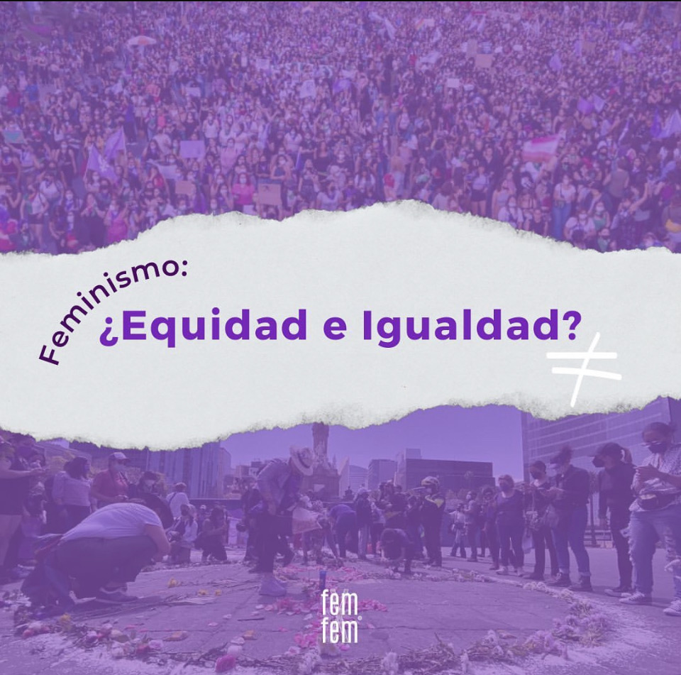

Post 1
La camita hacia la libertad. Únete a la marcha 8M
Post 2
Nunca es tarde para alzar la voz, para defendernos.

Post 3
Moving the thoughts
A escala mundial, lograr la igualdad de género también requiere la eliminación de prácticas dañinas contra las mujeres y las niñas, que incluyen el tráfico sexual, el feminicidio, la violencia sexual durante la guerra entre otras prácticas de violencia contra la mujer.
InformacionNosotros somos una asociacion dirigida a la concientizacion sobre la igualdad de genero. Estamos enfocados a informar sobre situaciones de riesgo que existen y brechas de gran problema que esto ha causado.
Conseguir que exista igualdad de género no es una tarea imposible, pero requiere de la implicación de toda la ciudadanía.
La camita hacia la libertad. Únete a la marcha 8M
Nunca es tarde para alzar la voz, para defendernos.
Moving the thoughts
Como la violencia doméstica, el acoso sexual, la trata de personas con fines de explotación sexual, el matrimonio forzado, entre otros.
InformacionExisten 7 ámbitos de desigualdad donde la mujer se ve en desventaja debido a las condiciones sociales o las políticas públicas de los distintos países.
En este sentido, la equidad de género se encaminará principalmente a brindar oportunidades justas a todas las personas independientemente de su género.
Las mujeres y las niñas representan la mitad de la población mundial y también, por tanto, la mitad de su potencial.
Las mujeres y las niñas representan la mitad de la población mundial y también, por tanto, la mitad de su potencial.